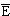

Испускание запаздывающих протонов

Рис.9.7. Испускание запаздывающих протонов |
Уменьшение энергии отделения протона при продвижении в
область протоно-избыточных изотопов делает возможным радиоактивные распады с
испусканием запаздывающих протонов (см рис. 9.7). Исходное ядро (Z,N) в
результате β+-распада
или e-захвата превращается в ядро (Z-1,N+1). Если энергия возбуждения E*
ядра (Z-1,N+1) больше энергии отделения протона Bp, то открыт канал
распада возбужденного состояния ядра (Z-1,N+1) с испусканием протона. Энергия
последнего определяется соотношением
Ep = (A - 1)(E* - Bp)/A,
A = Z + N.
Из-за необходимости преодолевать кулоновский барьер
вероятность испускания протона сильно зависит от его энергии. При малых Ep
радиоационная ширина уровня Гγ превышает протонную ширину Гp
(Гγ > Гp) и возбужденное ядро будет переходить в основное
состояние путем испускания g квантов. С ростом энергии протонов Ep
вероятость распада с испусканием протона увеличивается и при некоторой энергии p,
зависящей от заряда ядра (Z-1,N+1), будет выполняться соотношение Гp = Гγ.
Протонный распад будет конкурировать с
 -распадом
в случае -распадом
в случае  p<10-14 c.
Из формулы для проницаемости кулоновского барьера можно оценить кинетическую
энергию протонов p,
при которой их время жизни в ядре будет приблизительно равным 10-14 c.
В табл. 9.1 приводятся полученные таким способом оценки величин p
и a для ядер
с различными Z. p<10-14 c.
Из формулы для проницаемости кулоновского барьера можно оценить кинетическую
энергию протонов p,
при которой их время жизни в ядре будет приблизительно равным 10-14 c.
В табл. 9.1 приводятся полученные таким способом оценки величин p
и a для ядер
с различными Z.
Таблица 9.1. Энергии протонов p
и α-частиц
a,
испускаемых ядрами
за время ~10-14 c
Заряд ядра Z |
20 |
30 |
40 |
50 |
60 |
70 |
80 |
| p, Мэв |
0.7 |
0.9 |
1.5 |
2.0 |
2.5 |
3.0 |
3.5 |
| a, Мэв |
2.6 |
4.5 |
6.2 |
7.9 |
9.6 |
11.3 |
12.8 |
Условия для испускания запаздывающих протонов реализуются
у ядер, имеющих большой избыток протонов. В настоящее время известно свыше 70 β+-радиоактивных
ядер, излучателей запаздывающих протонов. В табл. 9.2 приведены характеристики
некоторых из них. В случае легких ядер область протонных излучателей находится
относительно близко от долины стабильности. Поэтому излучатели запаздывающих
протонов получают в реакциях типа (p, 2-3n), (3He,2-3n).
Таблица 9.2. Излучатели запаздывающих протонов
Изотоп |
T1/2,
с |
Qb - Ep,
Мэв |
*Рр, % |
Реакция |
| 9C |
0.126 |
16.68 |
100 |
10 B(p,2n), 7Be(3He,n) |
| 13O |
0.09 |
15.81 |
12 |
14 N(p,2n) |
| 21Mg |
0.121 |
10.66 |
20 |
23 Na(p,3n),20Ne(3He,2n) |
| 33Ar |
0.174 |
9.32 |
63 |
32 S(3He,2n),35Cl(p,3n) |
| 109Te |
4.4 |
7.14 |
3 |
92 Mo(20He,3n),96Ru(16O,3n) |
| 111Te |
19.3 |
5.1 |
0.12 |
102 Po(12C,3n),98Ru(16O,3n) |
| 114Cs |
0.7 |
8.8 |
7·10-2 |
La(p,3pxn) |
| 115Cs |
1.4 |
5.41 |
7·10-4 |
La(p,3pxn) |
| 116Cs |
3.9 |
6.45 |
6.6·10-3 |
92 Mo(32S,3p5n) |
| 118Cs |
16 |
4.7 |
4.4·10-4 |
La(p,3pxn) |
| 120Cs |
58 |
2.73 |
7·10-8 |
La(p,3pxn) |
| 181Hg |
3.6 |
6.15 |
1.8·10-2 |
Pb(p,3pxn) |
| 183Hg |
8.8 |
5.00 |
3.1·10-4 |
Pb(p,3pxn) |
* Рр - вероятность распада по протонному каналу

Рис. 9.8. Испускание запаздывающих протонов ядром 21Mg |
Одним из ядер, испускающих запаздывающие протоны, является
изотоп 21Mg. Наблюдение запаздывающих протонов происходило следующим
образом (см. рис. 9.8). Исходное ядро 20Ne облучалось ускоренными
ионами 3He и в результате реакции

образовывался изотоп 21Mg. Ядро 21Mg
нестабильно и результате β+-распада
превращается в изотоп 21Na:
 (T1/2 = 0.12 c). (T1/2 = 0.12 c).
В том случае, когда ядро 21Na образуется в состояниях с энергией
меньше 2.5 МэВ, в нем происходят обычные γ-переходы
в основное состояние с испусканием фотонов. Однако, если энергия возбуждения
ядра 21Na превышает 2.5 Мэв, открывается новая возможность. Ядро
21Na может, испустив протон, превратиться в устойчивый изотоп 20Ne.
21 Na  20Ne + p. 20Ne + p.
Испускание протона происходит практически мгновенно, после β+-распада
ядра 21Mg (T1/2
около 10-17 с), то есть наблюдается практически одновременное
появление протона и позитрона. Наблюдаемая скорость распада с испусканием
протонов будет определяться скоростью β+
распада ядра 21Mg.
При увеличении Z для получения протоноизбыточных ядер требуется все
больший нейтронный дефицит. Поэтому более выгодными оказываются реакции,
вызываемые тяжелыми ионами. Так, для получения протонного излучателя 109Tl
в реакции под действием ионов 3He необходимо испускание 6 нейтронов:

Для получения того же изотопа 109Tl при облучении мишени 96Ru
ионами 16O необходимо испускание лишь трех нейтронов

С увеличением Z это различие становится все более значительным.
Испускание двух запаздывающих протонов
Испускание двух запаздывающих протонов было обнаружено при β+-распаде
изотопа 22Al. Эксперимент выполнен на пучке ускоренных ионов 3He
с энергией 110 МэВ. Изотоп 22Al образовывался в реакции:
24 Mg(3He,p4n)22Al
и далее распадался (см. рис. 9.9) по цепочке


Рис. 9.9. Испускание двух запаздывающих протонов при
β+-распаде
22Al: а - спектры протонов в режиме совпадений, б - цепочка
распадов 22Al |
Протоны регистрировались двумя телескопами из трех кремниевых счетчиков -
системой
ΔE1-ΔE2-E
детекторов, имевших толщину соответственно 24, 155 и 500 мкм. Измерялись
двумерные спектры протонов в режиме совпадений с разрешающим временем 20 нс. В
спектре наблюдались два максимума при энергиях E1 + E2 = 4.139
и 5.636 МэВ, отвечающих двухпротонному распаду состояния 14.044 МэВ ядра 22Mg
с заселением основного и возбужденного (E* = 1.634 МэВ) состояний
конечного ядра 20Ne.
Запаздывающие альфа -частицы

Рис. 9.10. Схема образования запаздывающих α-частиц |
Впервые явление испускания запаздывающих α-частиц
наблюдалось в 1916 г. в опытах по изучению α -распада. Правильная интерпретация
этого явления была дана Гамовым в 1930 г. Суть явления легко понять из
рис. 9.10, на котором показана схема образования запаздывающих α-частиц при β-распаде
ядра 212Bi.
В результате β-распада
ядра 212Bi происходит образование ядра-изобара 212Po в
различных возбужденных состояниях. Ядро 212Po является нестабильным
по отношению к α-распаду. Для того, чтобы наблюдалось испускание запаздывающих
α-частиц, необходимо, чтобы собственная скорость α-распада была существенно
большее скорости предшествующего β-распада.
Энергетически испускание запаздывающих α-частиц возможно, если энергия β-перехода
Qb превышает энергию отделения α-частицы в дочернем ядре (Ba),
т.е. при Qb > Ba.
Образование в результате β-распада
ядер в возбужденных состояниях увеличивает возможную энергию α -перехода.
Вероятность α-распада из возбужденного состояния будет определяться конкуренцией
двух процессов: α-распада и -распада
этого возбужденного состояния. Для того, чтобы детектирование α-распада из
возбужденного состояния стало возможным, необходимо, чтобы ширина α-распада Гa
была бы одного порядка или больше радиационной ширины Гγ. С
уменьшением энергии α-частицы уменьшается вероятность туннельного эффекта,
определяющего скорость α-распада. По существу, в случае испускания запаздывающих
α-частиц ситуация полностью аналогична испусканию запаздывающих протонов.
Основным препятствием для вылета α-частиц является кулоновский барьер, высота
которого для α-частиц значительно больше, чем для протонов. Наличие кулоновского
барьера приводит к тому, что будет существовать некоторый порог a,
ниже которого наблюдение запаздывающих α-частиц становится невозможным. Величина
порога растет с ростом Z. (см. табл. 9.1). В настоящее время известно около 25
излучателей запаздывающих α-частиц. Некоторые из них приведены в табл. 9.3.
Необходимо иметь ввиду, что испускание запаздывающих α-частиц возможно как в
результате β--распада,
так и в результате β+-распада.
Существует довольно широкая область атомных ядер, для которой возможно
испускание запаздывающих α-частиц. Она простирается в области
нейтроннодефицитных изотопов вплоть до висмута (Z = 83). Однако в этой же
области одновременно выполняются условия и для испускания запаздывающих
протонов. В силу большей проницаемости кулоновского барьера для протонов, эта
мода распада,по-видимому, будет доминирующей.
Таблица 9.3 Излучатели запаздывающих α-частиц
| Изотоп и тип β-распада |
T1/2, с |
Qb - Ea, МэВ |
*Pa,% |
Реакция |
| 8Li,β- |
0.84 |
16.1 |
100 |
7Li(d,p) |
| 11Be,β- |
13.8 |
2.8 |
3 |
11Be(t,p) |
| 8N,β+ |
0.011 |
10.0 |
3.5 |
12C(p,n) |
| 16N,β- |
7.1 |
3.2 |
1.2·10-3 |
16O(n,p) |
| 114Cs,β+ |
0.7 |
14.6 |
(10-1)? |
La(p,3pxn) |
| 116Cs,β+ |
3.9 |
|
8·10-3 |
La(p,3pxn) |
| 118Cs,β+ |
16.4 |
10.6 |
2.4·10-3 |
La+p, 92Mo+32S |
| 120Cs,β+ |
58.3 |
9.1 |
2·10-5 |
La(p,3pxn) |
* Pa- вероятность распада по α-каналу
Примеры распада ядер вблизи протонной границы

Рис. 9.11. Схема распада
43Cr |
Для ядер, расположенных вблизи протонной границы, большие
энергии β-распада
и e-захвата приводят к большому разнообразию мод распада. На рис. 9.11 показана
схема распада 43V, образующегося после β+-распада
изотопа 43Cr. Наряду с испусканием одного и двух запаздывающих
протонов на состояния конечных ядер 42Ti и 41Sc
наблюдается испускание запаздывающих α-частиц с образованием ядер 39Sc,
которые в свою очередь испускают протоны и превращаются в 38Ca.
Аналогичная ситуация имеет место и для более легких изотопов Al и Si.
Легкие протоноизбыточные изотопы в эксперименте, выполненном
в GANIL, образовывались в результате фрагментации пучка 36Ar с
энергией 95 МэВ/нуклон на мишени 58Ni [S. Czajkovski Nucl. Phys.
A616, 1997, p.278]. Исследуемые изотопы имплантировались в телескоп кремниевых
счетчиков, состоящий из двух  E
и одного E детектора, что позволяло исследовать возможные каналы распада в
совпадении с β-частицами
распада. На рис. 9.12 - 9.14 показана спектроскопия запаздывающих βp,
β2p, βpα
для изотопов 22Al, 23,24Si. Здесь же для сравнения
приведены результаты соответствующих теоретических расчетов. Для всех
исследованных изотопов наблюдается довольно большое количество открытых каналов
испускания запаздывающих частиц. Наряду с уже достаточно хорошо иссследованным
каналом испускания запаздывающих протонов, наблюдается последовательное
испускание двух запаздывающих протонов, испускание запаздывающих α-частиц.
Теоретические модели достаточно хорошо описывают экспериментальную ситуацию. E
и одного E детектора, что позволяло исследовать возможные каналы распада в
совпадении с β-частицами
распада. На рис. 9.12 - 9.14 показана спектроскопия запаздывающих βp,
β2p, βpα
для изотопов 22Al, 23,24Si. Здесь же для сравнения
приведены результаты соответствующих теоретических расчетов. Для всех
исследованных изотопов наблюдается довольно большое количество открытых каналов
испускания запаздывающих частиц. Наряду с уже достаточно хорошо иссследованным
каналом испускания запаздывающих протонов, наблюдается последовательное
испускание двух запаздывающих протонов, испускание запаздывающих α-частиц.
Теоретические модели достаточно хорошо описывают экспериментальную ситуацию.

Рис. 9.12. Схема распада ядра 23Si. С правой стороны
приведены результаты теоретических расчетов |
 Рис. 9.13. Схема распада ядра 24Si. С правой стороны приведены
результаты теоретических расчетов
Рис. 9.13. Схема распада ядра 24Si. С правой стороны приведены
результаты теоретических расчетов |

Рис. 9.14. Схема распада ядра
22Al. С правой стороны приведены результаты теоретических
расчетов |
Протоноизбыточные ядра в области 106Te -
114Cs дают хорошую возможность для экспериментального исследования
конкуренции между α-распадом, протонной и кластерной радиоактивностью.
Обнаруженные островки α-радиоактивных ядер (106-108Te, 108,110I,
110,111Xe) указывают на заполненность оболочки N = 50, Z = 50. Для
дальнейшего прояснения картины необходима дополнительная информация о каналах
распада изотопов Sn (A < 100), Sb (A < 102), Te (A < 106), I (A < 108).
Предварительные оценки, выполненные для 114Ba указывают на то, что
отношение вероятностей распадов с испусканием 12C и α-частиц может
оказаться больше, чем для ядер в области свинца.
Исследование ядер вблизи грааницы протонной стабильности на
современных пучках радиоактивных ионов открывает новые возможности для
наблюдения различных мод распада таких ядер. Перспективы наблюдения новых
примеров кластерной радиоактивности связаны прежде всего с областью тяжелых
протоноизбыточных ядер. Несомненно, что анализ новых экзотических мод распада
существенно обогатит наше понимание внутренней ядерной динамики. Основная
сложность при исследованиях в этой области связана с большой вероятностью
α-распада, что приводит к выделению этого канала распада и сложностям накопления
большого количества интересующих изотопов.
В работах [В.П. Бугров, С.Г. Кадменский. Я.Ф. т.49, 1989,
с. 1562; С.Г. Кадменский, В.П. Бугров. Я.Ф. т.59, 1996, с. 424; C.N. Davids et
al. Phys. Rev. Lett. V80, 1998, p.1849] было показано, что ядра, испытывающие
протонный распад, имеют довольно значительные деформации. Поэтому в
энергетических спектрах протонов должна проявляться вращательная полоса, т.е. с
заметной вероятностью можно ожидать протонных переходов не только на основное ,
но и на вращательные состояния (особенно первое) дочернего ядра. Теоретические
расчеты показывают, что этот эффект можно пытаться наблюдать в ядрах с одним
неспаренным протоном 131Eu и 141Ho,что позволит получить
информацию о структуре состояния протона в исходном ядре.
Исследование протонного распада из основных и изомерных
состояний ядер вблизи границы протонной стабильности позволяет получить
информацию о параметрах оболочечного потенциала и структуре состояний исходного
и конечного ядер. Поскольку ширины распада оказываются сильно чувствительны к
параметру деформации ядер, экспериментальные исследования вероятностей протонной
радиоактивности позволяют с высокой точностью извлекать параметры деформации
ядер, испускающих протоны из основного состояния.
Запаздывающие протоны и структура ядерных состояний
Анализ спектров запаздывающих протонов легких ядер
позволяет изучать структуру отдельных ядерных уровней, получать информацию о
возбуждении состояний с различными значениями изоспина и степени чистоты
состояний по изоспину.

Рис. 9.15. Запаздывающие протоны, образующиеся при распаде ядра 33Ar |
Рассмотрим это на примере ядра 33Аr . Ядро
33Аr имеет период полураспада 173 мс и в результате
β+-распада превращается в ядро
33Cl (рис. 9.15). Энергия
β+-распада ядра 33Aг
составляет 11.605 МэВ. Спектр запаздывающих протонов, измеренный с помощью E-E
телескопа кремниевых счетчиков, показан на рис. 9.15. Наиболее интенсивный
максимум в спектре отвечает Ер ~3.2 МэВ и обусловлен распадом состояния с
E = 5.55 МэВ (Jp = I/2+, Т = 3/2) ядра 33Сl на
основное состояние ядра 32S (Jp = 0+, Т = 0).
Основные состояния ядер 33Аг и 33Cl имеют значение
изоспина соответственно 3/2 и 1/2. В случае сверхразрешенных β+-переходов
(Т = 0) в
ядре 33Cl должны заселяться возбужденные состояния с Т = 3/2. Низшее
состояние с Т = 3/2 ядра 33Cl является изобараналогом основного
состояния ядра 33Аг. Положение изобараналоговых уровней можно
получить из условия зарядовой независимости ядерных сил. Энергии
изобараналоговых уровней в ядрах, отличающихся заменой одного нейтрона на
протон, смещены на величину
ΔE = ΔEкул - (mn
- mp)c2, |
(9.1) |
где ΔEкул - кулоновская
энергия протона, а (mn - mp) - разность масс нейтрона и
протона.
Оценка по формуле (8.1) дает для низшего Т = 3/2 состояния
ядра 33Cl значение около 5 МэВ. Такое состояние действительно было
обнаружено при энергии 5.55 МэВ (Jp = 1/2+, Т = 3/2). Так
как энергия отделения протона в ядре 33Cl составляет 2.28 МэВ, то
состояние 5.55 МэВ может распадаться с испусканием протонов. Распад на основное
состояние конечного ядра 32S будет приводить к образованию в
протонном спектре максимума с энергией около 3.2 МэВ. При этом из-за того, что
предшествующий β+-распад был
сверхразрешенным, будет наблюдаться максимум интенсивности, что в
действительности и имеет место. Однако в силу того, что изоспин основного
состояния ядра 32S равен нулю, распад состояния 5.55 МэВ ядра 32S
с испусканием протонов запрещен правилами отбора по изоспину. Распад возможен
лишь в том случае, если состояние 5.55 Мэв имеет примесь компоненты Т = 1/2 или
основное состояние ядра 32S имеет примесь состояния с Т = 1. Следует
ожидать большей примеси в возбужденном состоянии. Это обусловлено тем, что с
ростом энергии возбуждения увеличивается плотность состояний и вблизи
аналогового состояния с Т = 3/2 может оказаться состояние с Т = 1/2 с тем же
значением спина и четности, что и у состояния с Т = 3/2. В этом случае
вероятность смешивания состояний увеличивается. Такая ситуация как раз и имеет
место в ядре 33Cl. Расстояние между состояниями 5.550 МэВ (JP = 1/2+,
Т = 3/2) и 5.455 МэВ (JP = 1/2+, Т = 1/2) составляет около
100 кэВ и они могут сильно смешиваться кулоновским взаимодействием. Таким
образом, протонный распад в ядре 33Cl может происходить за счет того,
что состояние 5.55 МэВ не является чистым Т = 3/2 состоянием, а имеет примесь
компоненты Т = 1/2. Волновую функцию этого состояния можно записать в виде
Измеряя абсолютную вероятность β+-распада
на состояние 5.55 МзВ и сравнивая ее с расчетной величиной для сверхразрешенного
перехода, можно оценить чистоту состояния по изоспину. Оказалось, что примесь
компоненты Т = 1/2 в состоянии 5.55 МэВ составляет около 10%.
Если излучателем запаздывающих протонов является тяжелое
ядро,то разделить переходы между отдельными уровнями начального и конечного ядра
оказывается невозможным. В этом случае можно анализировать лишь спектр,
усредненный по некоторому энергетическому интервалу. Средняя интенсивность
протонного спектра I(Ер) может быть записана в виде
 |
(9.3) |

Рис. 9.16. Испускание запаздывающих протонов: а - энергетический спектр
запаздывающих протонов, б - схема их образования |
где  -интенсивность β-распада
на состояние i ядра, испускающего протоны, -интенсивность β-распада
на состояние i ядра, испускающего протоны,  -
ширина распада с испускаением протонов между состояниями i и f; -
ширина распада с испускаением протонов между состояниями i и f;  и и  -
ширины распада состояния i с испускаеним
-квантов и протонов. -
ширины распада состояния i с испускаеним
-квантов и протонов.
Обозначения, использованные в соотношении, легко понять из
рисунка. Суммирование идет по состояниям i ядра (A,Z-1) и f ядра (A-1,Z-2),
соответствующим вылету протонов с энергией Ep. Энергетическая
зависимость обоих факторов, описывающих форму спектра запаздывающих протонов,
показана на рис. 9.16. Интенсивность β-распада
с ростом энергии протонов в среднем уменьшается, так как испусканию протонов
высокой энергии должно соответствовать образование ядра (A,Z-1) в состоянии с
большой энергией возбуждения. Относительная протонная ширина растет с ростом Ep,
стремясь к единице в районе Гр > Гγ.
В общем случае влияние обеих компонент на форму протонного спектра может
меняться от ядра к ядру. Однако соотношение (9.3) в целом достаточно хорошо
описывает усредненную форму спектра запаздывающих протонов.
Более определенные результаты по свойствам силовой функции
могут быть получены в экспериментах на совпадение между запаздывающим протоном и
рентгеновским квантом, сопровождающим е-захват.

Рис. 9.17. Измерение времени жизни протонно-нестабильных состояний
методом р-х совпадений протон - рентгеновский фотон |
Рассмотрим ситуацию, когда в ядре (A,Z) происходит
е-захват (рис. 9.17). В результате в К-оболочке атома образуется вакансия,
которая будет заполняться путем перехода электронов с более высоко расположенных
оболочек. Соответствующий переход будет сопровождаться испусканием
рентгеновского излучения. Если образующееся ядро нестабильно по отношению к
испусканию протонов, то спектр и интенсивность рентгеновского излучения будет
существенно зависеть от того, как соотносятся между собой времена испускания
рентгеновского фотона и протона. Действительно, если испускание рентгеновского
кванта происходит раньше, чем испускание протона, то характеристики
рентгеновского излучения определяются атомом с ядром (A,Z-1). Если рентгеновский
квант излучается после вылета протона, то характеристики рентгеновского
излучения определяются атомом с ядром
(А-1,Z-2). Если атомное τат
и ядерное τяд времена жизни
сравнимы, то рентгеновское излучение, наблюдаемое на совпадение с протоном и без
совпадения, должно приводить к двум различным максимумам, относительные
интенсивности которых определяются временами τяд
и τат. Из относительных
интенсивностей этих максимумов можно получить прямую информацию о протонных и g
-ширинах как функциях энергии возбуждения ядра (А,Z-1). Возможности метода были
исследованы на примере ядра 69Se. Время заполнения вакансии в
К-оболочке τат для этого атома
составляет 2.9·10-16 с. Рассмотренный метод определения времен жизни
возбужденных состояний (протонных ширин) применим в том диапазоне времен,
который недоступен методу прямых электронных измерений и допплеровского
смещения. Наибольшая точность результатов получается в том случае, когда
τяд = τат, что
ограничивает область исследуемых ядер диапазоном Z = 20-60.
 ![[Нейтроноизбыточные ядра]](../introduction/images/next.gif)

|